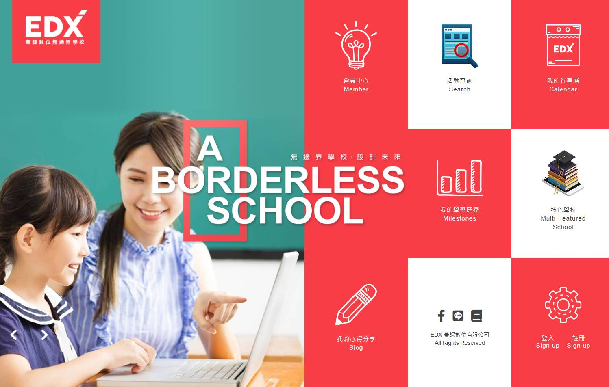
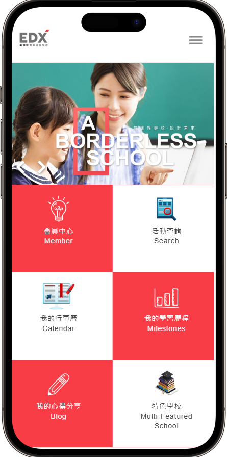
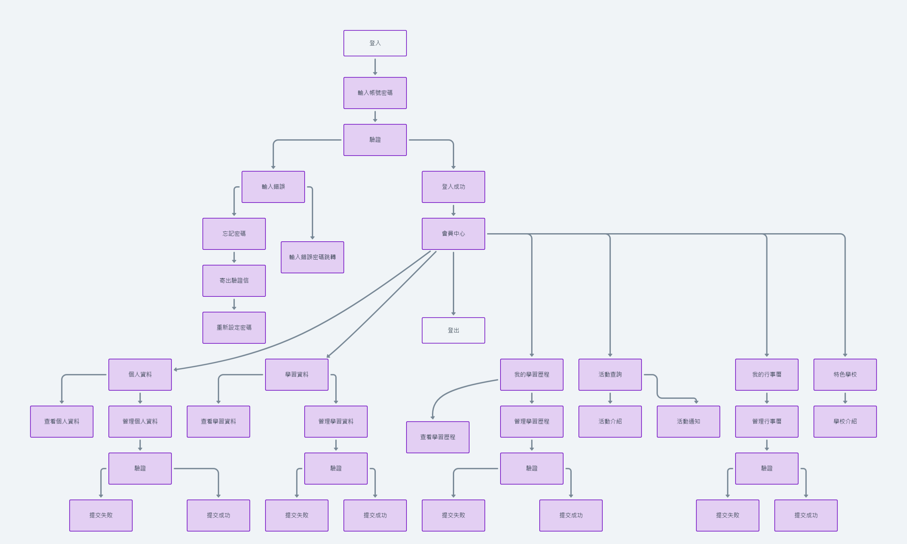
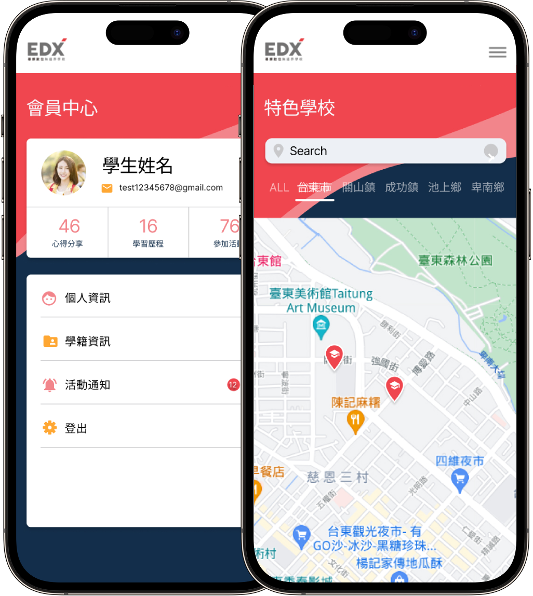

紀錄與整理得獎資料
在「獎項與榮譽」專區，學生可條列各類比賽、證照與校內外獎項，並上傳證明文件或照片，系統將自動依年度與類別分類，生成直觀的時間軸與成就展示頁；不僅方便申請時一鍵匯出，還可與導師共同檢視與評論，讓每一份榮譽都能得到完整保留與回顧。
我負責為線上教育平台 App「無邊界學校」設計並打造學習歷程管理功能，整合學生的學習進度與獲獎紀錄，協助學生在申請入學時完整呈現自身學習成果。設計聚焦解決學生在多元學習資料追蹤上的困擾，透過清晰的數據視覺化提升使用便利性。直觀的介面讓學生隨時了解自身進展並有效展現成果，大幅提高平台的實用性與使用者體驗。



在「獎項與榮譽」專區，學生可條列各類比賽、證照與校內外獎項，並上傳證明文件或照片，系統將自動依年度與類別分類，生成直觀的時間軸與成就展示頁；不僅方便申請時一鍵匯出，還可與導師共同檢視與評論，讓每一份榮譽都能得到完整保留與回顧。
「學習歷程」模組支援多樣化輸入格式，包含文字筆記、圖片作品、影片連結與外部檔案匯入，學生可依課程、專案或自主學習主題，自由編排內容區塊；平台還提供多種範本與排版工具，協助快速打造專業簡報式檔案，並自動備份雲端，隨時隨地掌握完整學習脈絡。
智能行事曆自動匯入校內外重要活動與考試時程，並可與 Google Calendar、iCal 同步；學生可設定自訂提醒、標籤分類與週期重複，並以日曆或待辦清單檢視所有待辦事項，確保不遺漏任何關鍵日期，讓時間管理更輕鬆、有條理。
在「活動中心」，學生可瀏覽最新社團招新、校內外競賽及講座資訊，一鍵報名並將活動自動加入個人行事曆；報名後更可於平台上查看活動詳情、導師聯絡方式與地點地圖，並在結束後發表心得，形成活動回顧與討論串，方便同儕互相交流。



「升學圈」提供同儕與學長姊的升學經驗分享區，學生可發問、留言與按讚，系統還會依興趣與科系推薦熱門討論；另一方面，專業輔導員與教師可發布官方公告與資源，形成多層次的互動生態，讓知識與經驗在社群中不斷流動與累積。
透過「校系搜尋」模組，學生可依科系、地區或排名篩選大學與科系，並比較錄取分數、就業率與學生評價；可自建志願清單與排序，系統自動生成報考建議，幫助學生做出最適合自己的升學決策。